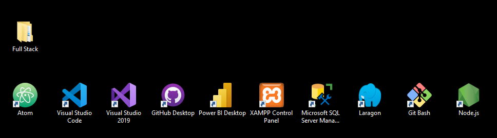
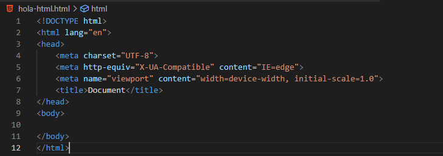
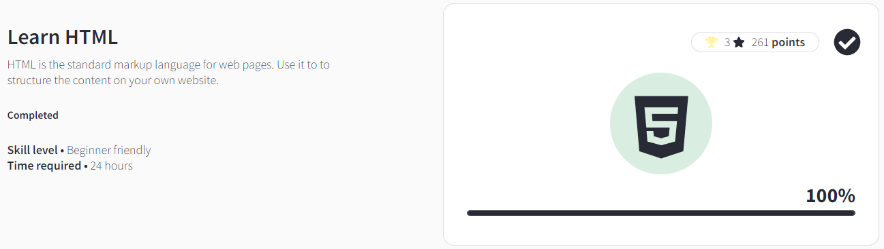
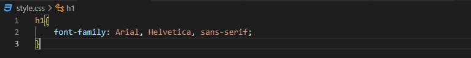
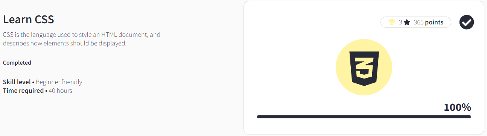

¡Bienvenido a Jarangos!
Mi nombre es Jair Emir Arango Berdugo, soy un joven de 27 años(bueno, no tan joven...) que desde hace un tiempo decidió iniciar su carrera como Programador WeB Full Stack. Desde niño siempre he tenido especial pasión por la cosas tecnólogicas, es por esto que inicié a estudiar programación en sistemas de información, por allá por el año 2017. Ultimamente mi pasión por la programación web a aumentado mucho, es por esto que decidí complementar mi carrera con aprendizaje autodidácta de esta profesión. Hasta el momento he adquirido un conocimiento espectacular y nada despreciable, el cual me ha provisto y proveerá muchas satisfacciones a futuro. Sin más preambulos, deseo detallar en esta página web —la cual es de mi autoría— como ha sido mi proceso evolutivo hasta ahora. Ruego al lector, que no me juzgue por la simplicidad de lo que vea hasta ahora, es un proceso largo y sinuoso, el cual tiene —como la mayoría de procesos— su etapa sosa. A continuación, mostraré un poco de cada uno de los cursos que he visto, y una breve descripción de mi percepción del mismo.
Inicios:
Siempre he tenido una especial fascinación por prepararme lo mejor posible para cada una de las cosas que me propongo realizar, por supuesto, el aprender programación no iba a ser la excepción. Por esto, me adelanté a averiguar todas las herramientas que necesitaría para emprender mi camino, entre las cuales encontré las siguientes:
Como pueden ver, soy un poquito anticipado y preparado para estas cosas...
HTML:

Ya había leído que HTML es el inicio de toda la programación web, así que decidí hacerle caso a las personas que saben del tema... Inicié mi curso en w3schools y logré obtener mi certificado con honores. Considero que es una de las mejores páginas para aprender, dado que es muy intuitiva, facil de usar y tiene muchos ejemplos. Ademas, me sirvió para practicar mi inglés... y no, no me están pagando, la publicidad es de gratis. :/
 CSS:

Este curso me encantó(quizá tengo vena de diseñador gráfico también), la forma en la que se puede jugar con las formas, colores, tamaños, es sencillamente sorprendente. Ademas, la integración de ambos es una cosa de otro mundo, creo que son el mejor matrimonio... Dejo mi primera prueba y mi distinguido emblema de w3schools.
 Me sentí como un niño viendo como cambiaba la tipografía. Sé que no es la gran cosa, pero es genial...
Git & GitHub:

¿Ya habíamos hablado de los matrimonios perfectos?, estos dos son indivorciables... Recuerdo a mi yo del pasado guardando las versiones de los archivos tipo: Proyecto > Proyecto V2 > Proyecto V3... > Proyecto Final > Proyecto FinalV2. Lo sé, no sabía lo que era vivir...
JavaScript:

JavaScript ha sido un lenguaje un poco complejo y dificil de dominar, por la cantidad de procesos que debo aprender, pero me ha dado una fascinación increible, siento que he aprendido tanto como he querido y cada día aprendo más. Es un lenguaje nutrido de una inmensidad de contenidos interesantes y que se aplican perfectamente al mundo real.